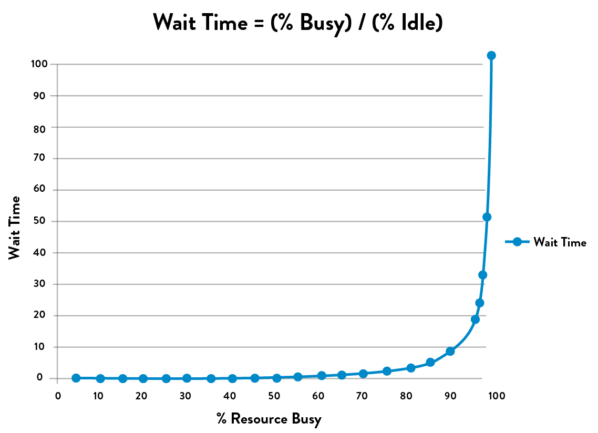

Appendices
APPENDIX 1 THE CONVERGENCE OF DEVOPS
We believe that DevOps is benefiting from an incredible convergence of management movements, which are all mutually reinforcing and can help create a powerful coalition to transform how organizations develop and deliver IT products and services.
John Willis named this “the Convergence of DevOps.” The various elements of this convergence are described below in approximate chronological order. (Note that these descriptions are not intended to be an exhaustive description, but merely enough to show the progression of thinking and the rather improbable connections that led to DevOps.)
THE LEAN MOVEMENT
The Lean Movement started in the 1980s as an attempt to codify the Toyota Production System with the popularization of techniques such as Value Stream Mapping, kanban boards, and Total Productive Maintenance.
Two major tenets of Lean were the deeply held belief that lead time (i.e., the time required to convert raw materials into finished goods) was the best predictor of quality, customer satisfaction, and employee happiness; and that one of the best predictors of short lead times was small batch sizes, with the theoretical ideal being “single piece flow” (i.e., “1x1” flow: inventory of 1, batch size of 1).
Lean principles focus on creating value for the customer—thinking systematically, creating constancy of purpose, embracing scientific thinking, creating flow and pull (versus push), assuring quality at the source, leading with humility, and respecting every individual.
THE AGILE MOVEMENT
Started in 2001, the Agile Manifesto was created by seventeen of the leading thinkers in software development, with the goal of turning lightweight methods such as DP and DSDM into a wider movement that could take on heavyweight software development processes such as waterfall development and methodologies such as the Rational Unified Process.
A key principle was to “deliver working software frequently, from a couple of weeks to a couple of months, with a preference to the shorter timescale.” Two other principles focus on the need for small, self-motivated teams, working in a high-trust management model and an emphasis on small batch sizes. Agile is also associated with a set of tools and practices such as Scrum, Standups, and so on.
THE VELOCITY CONFERENCE MOVEMENT
Started in 2007, the Velocity Conference was created by Steve Souders, John Allspaw, and Jesse Robbins to provide a home for the IT Operations and Web Performance tribe. At the Velocity 2009 conference, John Allspaw and Paul Hammond gave the seminal “10 Deploys per Day: Dev and Ops Cooperation at Flickr.”
THE AGILE INFRASTRUCTURE MOVEMENT
At the 2008 Agile Toronto conference, Patrick Dubois and Andrew Schafer held a “birds of a feather” session on applying Agile principles to infrastructure as opposed to application code. They rapidly gained a following of like-minded thinkers, including John Willis. Later, Dubois was so excited by Allspaw and Hammond’s “10 Deploys per Day: Dev and Ops Cooperation at Flickr” presentation that he created the first DevOpsDays in Ghent, Belgium, in 2009, coining the word “DevOps.”
THE CONTINUOUS DELIVERY MOVEMENT
Building upon the Development discipline of continuous build, test, and integration, Jez Humble and David Farley extended the concept of continuous delivery, which included a “deployment pipeline” to ensure that code and infrastructure are always in a deployable state and that all code checked in to truck is deployed into production.
This idea was first presented at Agile 2006 and was also independently developed by Tim Fitz in a blog post titled “Continuous Deployment.”
THE TOYOTA KATA MOVEMENT
In 2009, Mike Rother wrote Toyota Kata: Managing People for Improvement, Adaptiveness and Superior Results, which described learnings over his twenty-year journey to understand and codify the causal mechanisms of the Toyota Production System. Toyota Kata describes the “unseen managerial routines and thinking that lie behind Toyota’s success with continuous improvement and adaptation… and how other companies develop similar routines and thinking in their organizations.”
His conclusion was that the Lean community missed the most important practice of all, which he described as the Improvement Kata. He explains that every organization has work routines, and the critical factor in Toyota was making improvement work habitual, and building it into the daily work of everyone in the organization. The Toyota Kata institutes an iterative, incremental, scientific approach to problem solving in the pursuit of a shared organizational true north.
THE LEAN STARTUP MOVEMENT
In 2011, Eric Ries wrote The Lean Startup: How Today’s Entrepreneurs Use Continuous Innovation to Create Radically Successful Businesses, codifying his lessons learned at IMVU, a Silicon Valley startup, which built upon the work of Steve Blank in The Four Steps to the Epiphany as well as continuous deployment techniques. Eric Ries also codified related practices and terms including Minimum Viable Product, the build-measure-learn cycle, and many continuous deployment technical patterns.
THE LEAN UX MOVEMENT
In 2013, Jeff Gothelf wrote Lean UX: Applying Lean Principles to Improve User Experience, which codified how to improve the “fuzzy front end” and explained how product owners can frame business hypotheses, experiment, and gain confidence in those business hypotheses before investing time and resources in the resulting features. By adding Lean UX, we now have the tools to fully optimize the flow between business hypotheses, feature development, testing, deployment, and service delivery to the customer.
THE RUGGED COMPUTING MOVEMENT
In 2011, Joshua Corman, David Rice, and Jeff Williams examined the apparent futility of securing applications and environments late in the life cycle. In response, they created a philosophy called “Rugged Computing,” which attempts to frame the non-functional requirements of stability, scalability, availability, survivability, sustainability, security, supportability, manageability, and defensibility.
Because of the potential for high release rates, DevOps can put incredible pressure on QA and Infosec, because when deploy rates go from monthly or quarterly to hundreds or thousands daily, no longer are two week turnaround times from Infosec or QA tenable. The Rugged Computing movement posited that the current approach to fighting the vulnerable industrial complex being employed by most information security programs is hopeless.
APPENDIX 2 THEORY OF CONSTRAINTS AND CORE, CHRONIC CONFLICTS
The Theory of Constraints body of knowledge extensively discusses the use of creating core conflict clouds (often referred to as “C3”). Here is the conflict cloud for IT:
Figure 46: The core, chronic conflict facing every IT organization
During the 1980s, there was a very well-known core, chronic conflict in manufacturing. Every plant manager had two valid business goals: protect sales and reduce costs. The problem was that in order to protect sales, sales management was incentivized to increase inventory to ensure that it was always possible to fulfill customer demand.
On the other hand, in order to reduce cost, production management was incentivized to decrease inventory to ensure that money was not tied up in work in progress that wasn’t immediately shippable to the customer in the form of fulfilled sales.
They were able to break the conflict by adopting Lean principles, such as reducing batch sizes, reducing work in process, and shortening and amplifying feedback loops. This resulted in dramatic increases in plant productivity, product quality, and customer satisfaction.
The principles behind DevOps work patterns are the same as those that transformed manufacturing, allowing us to optimize the IT value stream, converting business needs into capabilities and services that provide value for our customers.
APPENDIX 3 TABULAR FORM OF DOWNWARD SPIRAL
The columnar form of the downward spiral depicted in The Phoenix Project is shown below:
Table 4: The Downward Spiral

APPENDIX 4 THE DANGERS OF HANDOFFS AND QUEUES
The problem with high amounts of queue time is exacerbated when there are many handoffs, because that is where queues are created. Figure 47 shows wait time as a function of how busy a resource at a work center is. The asymptotic curve shows why a “simple thirty-minute change” often takes weeks to complete—specific engineers and work centers often become problematic bottlenecks when they operate at high utilization. As a work center approaches 100% utilization, any work required from it will languish in queues and won’t be worked on without someone expediting/escalating.
 Figure 47: Queue size and wait times as function of percent utilization (Source: Kim, Behr, and Spafford, The Phoenix Project, ePub edition, 557.)
In figure 47, the x-axis is the percent busy for a given resource at a work center, and the y-axis is the approximate wait time (or, more precisely stated, the queue length). What the shape of the line shows is that as resource utilization goes past 80%, wait time goes through the roof.
In The Phoenix Project, here’s how Bill and his team realized the devastating consequences of this property on lead times for the commitments they were making to the project management office:
I tell them about what Erik told me at MRP-8, about how wait times depend upon resource utilization. “The wait time is the ‘percentage of time busy’ divided by the ‘percentage of time idle.’ In other words, if a resource is fifty percent busy, then it’s fifty percent idle. The wait time is fifty percent divided by fifty percent, so one unit of time. Let’s call it one hour.
So, on average, our task would wait in the queue for one hour before it gets worked.
“On the other hand, if a resource is ninety percent busy, the wait time is ‘ninety percent divided by ten percent,’ or nine hours. In other words, our task would wait in queue nine times longer than if the resource were fifty percent idle.”
I conclude, “So…For the Phoenix task, assuming we have seven handoffs, and that each of those resources is busy ninety percent of the time, the tasks would spend in queue a total of nine hours times the seven steps…”
“What? Sixty-three hours, just in queue time?” Wes says, incredulously. “That’s impossible!”
Patty says with a smirk, “Oh, of course. Because it’s only thirty seconds of typing, right?”
Bill and team realize that their “simple thirty-minute task” actually requires seven handoffs (e.g., server team, networking team, database team, virtualization team, and, of course, Brent, the “rockstar” engineer).
Assuming that all work centers were 90% busy, the figure shows us that the average wait time at each work center is nine hours—and because the work had to go through seven work centers, the total wait time is seven times that: sixty-three hours.
In other words, the total % of value added time (sometimes known as process time) was only 0.16% of the total lead time (thirty minutes divided by sixty-three hours). That means that for 99.8% of our total lead time, the work was simply sitting in queue, waiting to be worked on.
APPENDIX 5 MYTHS OF INDUSTRIAL SAFETY
Decades of research into complex systems shows that countermeasures are based on several myths. In “Some Myths about Industrial Safety,” by Denis Besnard and Erik Hollnagel, they are summarized as such:
- Myth 1: “Human error is the largest single cause of accidents and incidents.”
- Myth 2: “Systems will be safe if people comply with the procedures they have been given.”
- Myth 3: “Safety can be improved by barriers and protection; more layers of protection results in higher safety.”
- Myth 4: “Accident analysis can identify the root cause (the ‘truth’) of why the accident happened.”
- Myth 5: “Accident investigation is the logical and rational identification of causes based on facts.”
- Myth 6: “Safety always has the highest priority and will never be compromised.”
The differences between what is myth and what is true are shown below:
Table 5: Two Stories
APPENDIX 6 THE TOYOTA ANDON CORD
Many ask how can any work be completed if the Andon cord is being pulled over five thousand times per day? To be precise, not every Andon cord pull results in stopping the entire assembly line. Rather, when the Andon cord is pulled, the team leader overseeing the specified work center has fifty seconds to resolve the problem. If the problem has not been resolved by the time the fifty seconds is up, the partially assembled vehicle will cross a physically drawn line on the floor, and the assembly line will be stopped.
Figure 48: The Toyota Andon cord
APPENDIX 7 COTS SOFTWARE
Currently, in order to get complex COTS (commercial off-the-shelf) software (e.g., SAP, IBM WebSphere, Oracle WebLogic) into version control, we may have to eliminate the use of graphical point-and-click vendor installer tools. To do that, we need to discover what the vendor installer is doing, and we may need to do an install on a clean server image, diff the file system, and put those added files into version control. Files that don’t vary by environment are put into one place (“base install”), while environment-specific files are put into their own directory (“test” or “production”). By doing this, software install operations become merely a version control operation, enabling better visibility, repeatability, and speed.
We may also have to transform any application configuration settings so that they are in version control. For instance, we may transform application configurations that are stored in a database into XML files and vice versa.
APPENDIX 8 POST-MORTEM MEETINGS
A sample agenda of the post-mortem meeting is shown below:
- An initial statement will be made by the meeting leader or facilitator to reinforce that this meeting is a blameless post-mortem and that we will not focus on past events or speculate on “would haves” or “could haves.” Facilitators might read the “Retrospective Prime Directive” from the website Retrospective.com.
Furthermore, the facilitator will remind everyone that any countermeasures must be assigned to someone, and if the corrective action does not warrant being a top priority when the meeting is over, then it is not a corrective action. (This is to prevent the meeting from generating a list of good ideas that are never implemented.) - Those at the meeting will reach an agreement on the complete timeline of the incident, including when and who detected the issue, how it was discovered (e.g., automated monitoring, manual detection, customer notified us), when service was satisfactorily restored, and so forth. We will also integrate into the timeline all external communications during the incident.
When we use the word “timeline,” it may evoke the image of a linear set of steps of how we gained an understanding of the problem and eventually fixed it. In reality, especially in complex systems, there will likely be many events that contributed to the accident, and many troubleshooting paths and actions will have been taken in an effort to fix it. In this activity, we seek to chronicle all of these events and the perspectives of the actors and establish hypotheses concerning cause and effect where possible. - The team will create a list of all the factors which contributed to the incident, both human and technical. They may then sort them into categories, such as ‘design decision,’ ‘remediation,’ ‘discovering there was a problem,’ and so forth. The team will use techniques such as brainstorming and the ‘infinite hows’ to drill down on contributing factors they deem particularly important to discover deeper levels of contributing factors. All perspectives should be included and respected—nobody should be permitted to argue with or deny the reality of a contributing factor somebody else has identified. It’s important for the post-mortem facilitator to ensure that sufficient time is spent on this activity, and that the team doesn’t try and engage in convergent behavior such as trying to identify one or more ‘root causes.’
- Those at the meeting will reach an agreement on the list of corrective actions that will be made top priorities after the meeting. Assembling this list will require brainstorming and choosing the best potential actions to either prevent the issue from occurring or enable faster detection or recovery. Other ways to improve the systems may also be included.
Our goal is to identify the smallest number of incremental steps to achieve the desired outcomes, as opposed to “big bang” changes, which not only take longer to implement, but delay the improvements we need.
We will also generate a separate list of lower priority ideas and assign an owner. If similar problems occur in the future, these ideas may serve as the foundation for crafting future countermeasures. - Those at the meeting will reach an agreement on the incident metrics and their organizational impact. For example, we may choose to measure our incidents by the following metrics:
- ▹ Event severity: How severe was this issue? This directly relates to the impact on the service and our customers.
- ▹ Total downtime: How long were customers unable to use the service to any degree?
- ▹ Time to detect: How long did it take for us or our systems to know there was a problem?
- ▹ Time to resolve: How long after we knew there was a problem did it take for us to restore service?
Bethany Macri from Etsy observed, “Blamelessness in a post-mortem does not mean that no one takes responsibility. It means that we want to find out what the circumstances were that allowed the person making the change or who introduced the problem to do this. What was the larger environment….The idea is that by removing blame, you remove fear, and by removing fear, you get honesty.”
APPENDIX 9 THE SIMIAN ARMY
After the 2011 AWS EAST Outage, Netflix had numerous discussions about engineering their systems to automatically deal with failure. These discussions have evolved into a service called “Chaos Monkey.”
Since then, Chaos Monkey has evolved into a whole family of tools, known internally as the “Netflix Simian Army,” to simulate increasingly catastrophic levels of failures:
- Chaos Gorilla: simulates the failure of an entire AWS availability zone
- Chaos Kong: simulates failure of entire AWS regions, such as North America or Europe
Other member of the Simian Army now include:
- Latency Monkey: induces artificial delays or downtime in their RESTful client-server communication layer to simulate service degradation and ensure that dependent services respond appropriately
- Conformity Monkey: finds and shuts down AWS instances that don’t adhere to best-practices (e.g., when instances don’t belong to an auto-scaling group or when there is no escalation engineer email address listed in the service catalog)
- Doctor Monkey: taps into health checks that run on each instance and finds unhealthy instances and proactively shuts them down if owners don’t fix the root cause in time
- Janitor Monkey: ensures that their cloud environment is running free of clutter and waste; searches for unused resources and disposes of them
- Security Monkey: an extension of Conformity Monkey; finds and terminates instances with security violations or vulnerabilities, such as improperly configured AWS security groups
APPENDIX 10 TRANSPARENT UPTIME
Lenny Rachitsky wrote about the benefits of what he called “transparent uptime”:
- Your support costs go down as your users are able to self-identify system wide problems without calling or emailing your support department. Users will no longer have to guess whether their issues are local or global, and can more quickly get to the root of the problem before complaining to you.
- You are better able to communicate with your users during downtime events, taking advantage of the broadcast nature of the Internet versus the one-to-one nature of email and the phone. You spend less time communicating the same thing over and over and more time resolving the issue.
- You create a single and obvious place for your users to come to when they are experiencing downtime. You save your users’ time currently spent searching forums, Twitter, or your blog.
- Trust is the cornerstone of any successful SaaS adoption. Your customers are betting their business and their livelihoods on your service or platform. Both current and prospective customers require confidence in your service. Both need to know they won’t be left in the dark, alone and uninformed, when you run into trouble. Real time insight into unexpected events is the best way to build this trust. Keeping them in the dark and alone is no longer an option.
- It’s only a matter of time before every serious SaaS provider will be offering a public health dashboard. Your users will demand it.

Table of contents
- Preface
- Foreword
- Imagine a World Where Dev and Ops Become DevOps
-
Part I The Three Ways
- A BRIEF HISTORY
- 1 Agile, Continuous Delivery, and the Three Ways
- 2 The First Way: The Principles of Flow
- 3 The Second Way: The Principles of Feedback
- 4 The Third Way: The Principles of Continual Learning and Experimentation
-
Part II Where to Start
- Introduction
- 5 Selecting Which Value Stream to Start With
- 6 Understanding the Work in Our Value Stream, Making it Visible, and Expanding it Across the Organization
-
7 How to Design Our Organization and Architecture with Conway’s Law in Mind
- ORGANIZATIONAL ARCHETYPES
- PROBLEMS OFTEN CAUSED BY OVERLY FUNCTIONAL ORIENTATION (“OPTIMIZING FOR COST”)
- ENABLE MARKET-ORIENTED TEAMS (“OPTIMIZING FOR SPEED”)
- MAKING FUNCTIONAL ORIENTATION WORK
- TESTING, OPERATIONS, AND SECURITY AS EVERYONE’S JOB, EVERY DAY
- ENABLE EVERY TEAM MEMBER TO BE A GENERALIST
- FUND NOT PROJECTS, BUT SERVICES AND PRODUCTS
- DESIGN TEAM BOUNDARIES IN ACCORDANCE WITH CONWAY’S LAW
- CREATE LOOSELY-COUPLED ARCHITECTURES TO ENABLE DEVELOPER PRODUCTIVITY AND SAFETY
- CONCLUSION
- 8 How to Get Great Outcomes by Integrating Operations into the Daily Work of Development
-
PART III—THE FIRST WAY: THE TECHNICAL PRACTICES OF FLOW
- 9 Create the Foundations of Our Deployment Pipeline
-
10 Enable Fast and Reliable Automated Testing
- CONTINUOUSLY BUILD, TEST, AND INTEGRATE OUR CODE AND ENVIRONMENTS
-
BUILD A FAST AND RELIABLE AUTOMATED VALIDATION TEST SUITE
- CATCH ERRORS AS EARLY IN OUR AUTOMATED TESTING AS POSSIBLE
- ENSURE TESTS RUN QUICKLY (IN PARALLEL, IF NECESSARY)
- WRITE OUR AUTOMATED TESTS BEFORE WE WRITE THE CODE (“TEST-DRIVEN DEVELOPMENT”)
- AUTOMATE AS MANY OF OUR MANUAL TESTS AS POSSIBLE
- INTEGRATE PERFORMANCE TESTING INTO OUR TEST SUITE
- INTEGRATE NON-FUNCTIONAL REQUIREMENTS TESTING INTO OUR TEST SUITE
- PULL OUR ANDON CORD WHEN THE DEPLOYMENT PIPELINE BREAKS
- CONCLUSION
- 11 Enable and Practice Continuous Integration
- 12 Automate and Enable Low-Risk Releases
- 13 Architect for Low-Risk Releases
-
PART IV—THE SECOND WAY: THE TECHNICAL PRACTICES OF FEEDBACK
- Introduction
-
14 Create Telemetry to Enable Seeing and Solving Problems
- CREATE OUR CENTRALIZED TELEMETRY INFRASTRUCTURE
- CREATE APPLICATION LOGGING TELEMETRY THAT HELPS PRODUCTION
- USE TELEMETRY TO GUIDE PROBLEM SOLVING
- ENABLE CREATION OF PRODUCTION METRICS AS PART OF DAILY WORK
- CREATE SELF-SERVICE ACCESS TO TELEMETRY AND INFORMATION RADIATORS
- FIND AND FILL ANY TELEMETRY GAPS
- CONCLUSION
- 15 Analyze Telemetry to Better Anticipate Problems and Achieve Goals
- 16 Enable Feedback So Development and Operations Can Safely Deploy Code
- 17 Integrate Hypothesis-Driven Development and A/B Testing into Our Daily Work
-
18 Create Review and Coordination Processes to Increase Quality of Our Current Work
- THE DANGERS OF CHANGE APPROVAL PROCESSES
- POTENTIAL DANGERS OF “OVERLY CONTROLLING CHANGES”
- ENABLE COORDINATION AND SCHEDULING OF CHANGES
- ENABLE PEER REVIEW OF CHANGES
- POTENTIAL DANGERS OF DOING MORE MANUAL TESTING AND CHANGE FREEZES
- ENABLE PAIR PROGRAMMING TO IMPROVE ALL OUR CHANGES
- FEARLESSLY CUT BUREAUCRATIC PROCESSES
- CONCLUSION
- PART IV CONCLUSION
-
PART V—THE THIRD WAY: THE TECHNICAL PRACTICES OF CONTINUAL LEARNING AND EXPERIMENTATION
- Introduction
-
19 Enable and Inject Learning into Daily Work
- ESTABLISH A JUST, LEARNING CULTURE
- SCHEDULE BLAMELESS POST-MORTEM MEETINGS AFTER ACCIDENTS OCCUR
- PUBLISH OUR POST-MORTEMS AS WIDELY AS POSSIBLE
- DECREASE INCIDENT TOLERANCES TO FIND EVER-WEAKER FAILURE SIGNALS
- REDEFINE FAILURE AND ENCOURAGE CALCULATED RISK-TAKING
- INJECT PRODUCTION FAILURES TO ENABLE RESILIENCE AND LEARNING
- INSTITUTE GAME DAYS TO REHEARSE FAILURES
- CONCLUSION
-
20 Convert Local Discoveries into Global Improvements
- USE CHAT ROOMS AND CHAT BOTS TO AUTOMATE AND CAPTURE ORGANIZATIONAL KNOWLEDGE
- AUTOMATE STANDARDIZED PROCESSES IN SOFTWARE FOR RE-USE
- CREATE A SINGLE, SHARED SOURCE CODE REPOSITORY FOR OUR ENTIRE ORGANIZATION
- SPREAD KNOWLEDGE BY USING AUTOMATED TESTS AS DOCUMENTATION AND COMMUNITIES OF PRACTICE
- DESIGN FOR OPERATIONS THROUGH CODIFIED NON-FUNCTIONAL REQUIREMENTS
- BUILD REUSABLE OPERATIONS USER STORIES INTO DEVELOPMENT
- ENSURE TECHNOLOGY CHOICES HELP ACHIEVE ORGANIZATIONAL GOALS
- CONCLUSION
- 21 Reserve Time to Create Organizational Learning and Improvement
-
22 Information Security as Everyone’s Job, Every Day
- INTEGRATE SECURITY INTO DEVELOPMENT ITERATION DEMONSTRATIONS
- INTEGRATE SECURITY INTO DEFECT TRACKING AND POST-MORTEMS
- INTEGRATE PREVENTIVE SECURITY CONTROLS INTO SHARED SOURCE CODE REPOSITORIES AND SHARED SERVICES
- INTEGRATE SECURITY INTO OUR DEPLOYMENT PIPELINE
- ENSURE SECURITY OF THE APPLICATION
- ENSURE SECURITY OF OUR SOFTWARE SUPPLY CHAIN
- ENSURE SECURITY OF THE ENVIRONMENT
- INTEGRATE INFORMATION SECURITY INTO PRODUCTION TELEMETRY
- CREATING SECURITY TELEMETRY IN OUR APPLICATIONS
- CREATING SECURITY TELEMETRY IN OUR ENVIRONMENT
- PROTECT OUR DEPLOYMENT PIPELINE
- CONCLUSION
-
23 Protecting the Deployment Pipeline
- INTEGRATE SECURITY AND COMPLIANCE INTO CHANGE APPROVAL PROCESSES
- RE-CATEGORIZE THE MAJORITY OF OUR LOWER RISK CHANGES AS STANDARD CHANGES
- WHAT TO DO WHEN CHANGES ARE CATEGORIZED AS NORMAL CHANGES
- REDUCE RELIANCE ON SEPARATION OF DUTY
- ENSURE DOCUMENTATION AND PROOF FOR AUDITORS AND COMPLIANCE OFFICERS
- CONCLUSION
- PART VI CONCLUSION
- A Call to Action
-
Appendices
- APPENDIX 1 THE CONVERGENCE OF DEVOPS
- APPENDIX 2 THEORY OF CONSTRAINTS AND CORE, CHRONIC CONFLICTS
- APPENDIX 3 TABULAR FORM OF DOWNWARD SPIRAL
- APPENDIX 4 THE DANGERS OF HANDOFFS AND QUEUES
- APPENDIX 5 MYTHS OF INDUSTRIAL SAFETY
- APPENDIX 6 THE TOYOTA ANDON CORD
- APPENDIX 7 COTS SOFTWARE
- APPENDIX 8 POST-MORTEM MEETINGS
- APPENDIX 9 THE SIMIAN ARMY
- APPENDIX 10 TRANSPARENT UPTIME
- Additional Resources
- Endnotes
- Index
- Acknowledgments
- Author Biographies